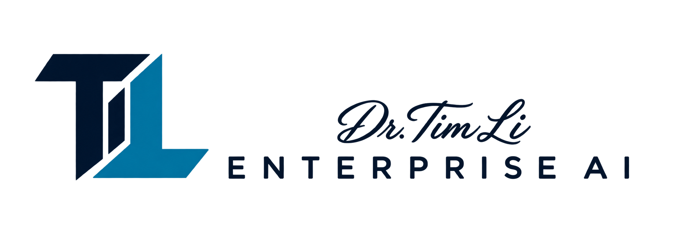

AI 战略与准备度评估
识别高价值机会，评估数据和运营准备度，制定团队能够付诸行动的路线图。

无论您是在探索首个应用场景，还是准备将试点推向实际运营，都应让 AI 投资聚焦真正重要的业务。
识别高价值机会，评估数据和运营准备度，制定团队能够付诸行动的路线图。
将聚焦的应用场景转化为可运行的试点，明确成功标准、评估技术方案，并规划实际业务集成。
建立相应的工作机制、技能和职责，让团队在清晰边界与适当监督下，自信地应用 AI。
通过协作，将业务重点与技术决策紧密衔接，并在每个阶段持续学习。
了解业务挑战、相关人员以及期望实现的改进成果。
根据价值、可行性和风险，选定一个重点机会。
通过实际试点，依据共同商定的成功标准验证方案。
规划系统集成，明确责任归属，帮助团队持续改进。
Dr. Tim Li Enterprise AI 是一家咨询公司，专注于帮助组织将人工智能应用于实际业务。
我们从您的业务出发，将清晰的思考、周全的实施与推动变革的人才紧密结合。
探讨您的 AI 重点方向 ↗